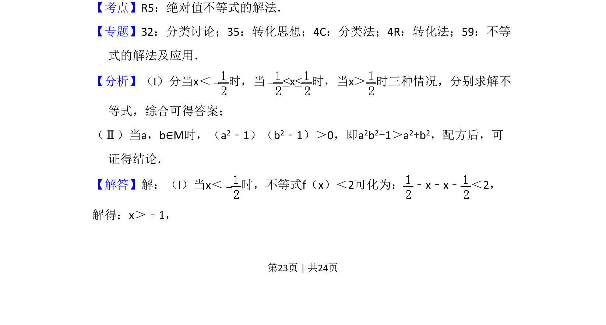
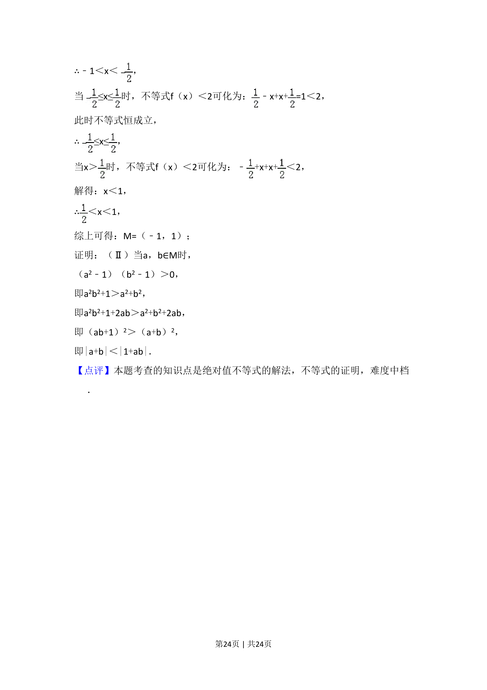

考点：绝对值不等式 分类讨论 不等式证明
求含绝对值不等式 f(x)=|x-1/2|+|x+1/2|≤6 的解集 M；并由 a,b∈M 证明 |a+b|<|1+ab|。


📄 原 PDF 第 23 页：
素材/真题/吉林/2008-2024·（吉林）数学高考真题/2016年高考数学试卷（理）（新课标Ⅱ）（解析卷）.pdf
24．已知函数f（x）=|x﹣|+|x+ |，M为不等式f（x）＜2的解集． （Ⅰ）求M； （Ⅱ）证明：当a，b∈M时，|a+b|＜|1+ab|．
【考点】R5：绝对值不等式的解法．菁优网版权所有 【专题】32：分类讨论；35：转化思想；4C：分类法；4R：转化法；59：不等 式的解法及应用． 【分析】（I）分当x＜ 时，当≤x≤时，当x＞ 时三种情况，分别求解不 等式，综合可得答案； （Ⅱ）当a，b∈M时，（a2﹣1）（b2﹣1）＞0，即a2b2+1＞a2+b2，配方后，可 证得结论． 【解答】解：（I）当x＜ 时，不等式f（x）＜2可化为： ﹣x﹣x﹣ ＜2， 解得：x＞﹣1，